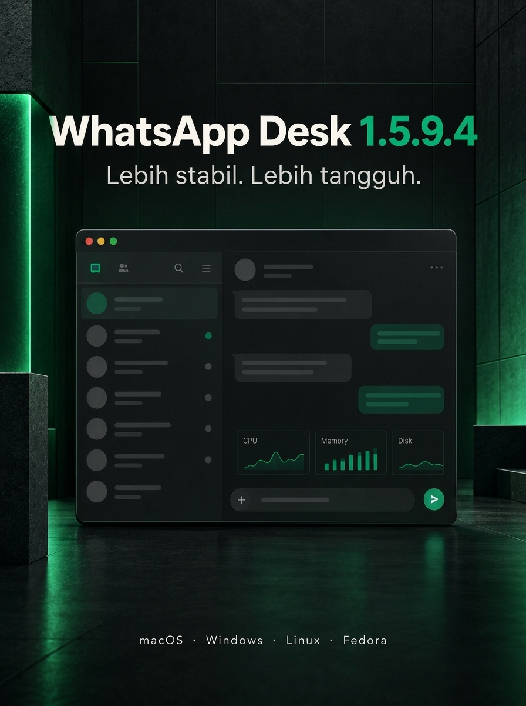

Preview, then decide.
Open PDFs and common office files without unnecessary duplicate downloads.
A focused desktop home for WhatsApp Web—built with the native web engine already on your computer.
Download latest release Checking your platform…
WhatsApp Desk stays close to WhatsApp Web while adding the desktop controls that matter every day.
Open PDFs and common office files without unnecessary duplicate downloads.
Theme, privacy mode, always-on-top, audio mute, startup, and download location.
Non-essential enhancement work yields while busy chat lists are scrolling.
Automatic detection is a convenience. Every release is also available for manual download.
Apple Silicon and Intel. DMG installer.
Download DMG ↗Windows 10/11. WebView2 required.
Download Setup ↗Debian/Ubuntu package or portable archive.
Download DEB ↗Fedora/RHEL package using WebKitGTK 4.1.
Download RPM ↗Linux packages are pinned to v1.5.9.2 while the Linux build of v1.5.9.4 is verified; ARM64 users can find compatible assets in the release archive. If detection is incorrect, select a platform manually above.

Windows now gets a proper setup wizard with shortcuts and clean uninstall, pre-DOM initialization resilience on WebView2, and isolated UI modules. Each monitor also remembers its own window position.
View release notes ↗